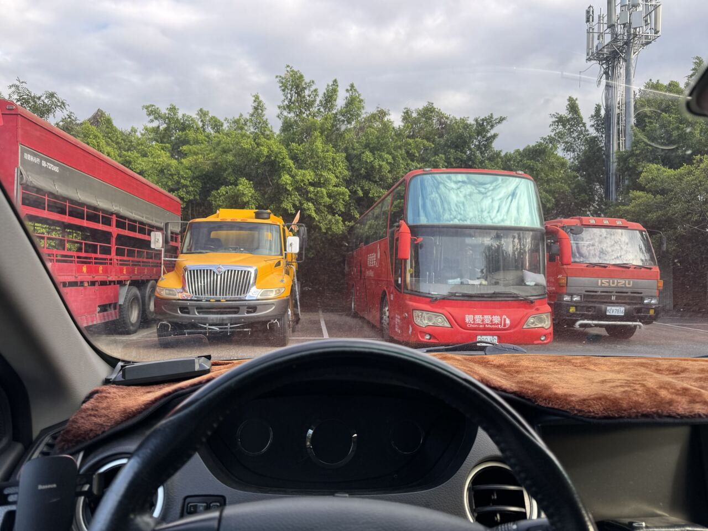

- 5/9準備與整理
任務一：搭好瓦楞板實驗場地
這是我們兄弟倆一起做的實驗車道。
- 5/10準備與整理
任務二：micro:bit 程式練習
我們自己設計了會自動跑 A～Z 跑馬燈、還會發出聲音的測試程式。
- 5/13準備與整理
任務三：組裝麥昆 Plus V3 小車
今天我們兄弟倆協力完成了麥昆 Plus V3 智能擴充小車的硬體組裝！這台小車將會是我們接下來進行光學雷達避障測試的核心載具。
- 5/13準備與整理
任務四：循線行駛與速度極限測試
我們兄弟倆合力進行了麥昆小車的第一個實驗：讓小車沿著黑線繞圈圈。在過程中，我們不斷修改與調整直線及轉彎的速度參數。這項實驗的目的是要找出小車在維持穩定循線的前提下，所能達到的速度極限。
循線行駛測試 - 5/14實驗一
任務五：完成實驗一（夜盲症測試）
我們兄弟倆合力完成了實驗一！透過三種不同的光線情境（正常日光燈、手電筒強光、關燈全黑）反覆進行實驗，並調整不同的測量距離。在這過程中，我們不僅順利排除了程式的 Bug，還發現了幾個很棒的科學結果，這證明了我們的「全生命守護系統」真的不怕黑！
- 5/17實驗三
任務七：完成實驗三（最佳視角測試）
5 月 17 日，我們兄弟倆再次聯手出擊，順利完成「實驗三」的數據蒐集！這次我們挑戰找出光學雷達的「最佳黃金視角」。
📏 硬體改裝：我們拿著直尺小心翼翼地測量，將光學雷達精準安裝在 5cm（低位）、10cm（中位）與 15cm（高位）三種不同的測試高度。
💻 修改程式：我們修改 MakeCode Python 程式，為實驗三加入專屬的通訊標籤，再燒錄到小車裡。
👀 盯著數據：我們兄弟倆雙眼緊盯著基地台接收到的數據，深怕漏掉任何一次跳動，並將重要數據截圖存起來。
📊 整理數據：實驗結束後，我們把一筆筆原始數據輸入到 Excel 試算表中。
- 5/17失敗與修正
數字變成亂碼
遇到的問題：讓雷達一直量、一直傳，結果兩塊 micro:bit 的資料撞在一起，電腦收到的數字變成亂碼。
改法：在程式裡加了 basic.pause(200)，每次等 0.2 秒再傳，資料排好隊一個一個傳，數字就變整齊了。
- 5/20實驗二
任務六：完成實驗二（材質與超音波對決）
5 月 20 日，超音波感測器終於到貨！我們兄弟倆合力完成了這場最精彩的「感測器生死鬥」。
📦 測試材質：白色紙板（高反光）、棕色紙板（漫反射）以及最關鍵的黑色絨毛玩偶（很會吸光也很會吸音）。
🛠️ 雙感測器戰車：把光學雷達與超音波感測器裝在小車上同一個位置、同一個高度，公平對決。
🚗 實驗進行中：我們分工合作，反覆測試 30 到 150 公分的距離，耐心等待兩種感測器輪流回傳數據。
- 5/21實驗四
任務八：完成實驗四（生死一瞬間）
5 月 21 日，我們進行了實驗四的極限測試！這次要挑戰物理學的「慣性」，找出小車在不同速度下的實際煞車滑行距離。
💻 實驗開始前，我們把緊急煞車的程式寫好，燒錄到小車裡。
🏎️ 小車在起跑線上準備以 20、30、40 cm/s 衝刺，測試煞車的極限！
👀 我們一邊看小車衝刺和煞車，一邊看電腦收到的數字，把滑行距離一筆筆記下來。
煞車測試 - 5/21轉折點
老師問：會很常遇到石虎嗎？可以換成人嗎？
我們覺得很好，因為車子撞到人也很危險。從這天起，我們要保護的對象從石虎變成「石虎和行人」，研究名稱也變成「零死角全生命守護」。
- 5/22轉折點
研究動機改成「視野死角」
老師建議把研究動機改成視野死角。我們發現車子轉彎時，前面那顆雷達看不到旁邊，這就是後來實驗五-B 和實驗六要解決的問題。
- 5/24實驗五-B
任務九：完成實驗五-B（24 宮格）
5 月 24 日，我們迎來了「網格導航關卡」！這是在模擬沒有預先載入地圖的情況下，小車如何靠自己探索並避開不知道在哪裡的障礙物。
🚧 實驗前，我們仔細擺好模擬石虎與行人的路障，也反覆調整小車原地轉 90 度的角度，讓車身轉彎時不會碰到邊界或路障。
🏎️ 小車結合了光學雷達和網格記憶，在 24 宮格裡連續閃開路障，還會從死胡同裡退出來！
擺路障、調整轉彎 24 宮格實際避障 - 5/27實驗五-A
任務十：完成實驗五-A（窄山路對決）
5 月 27 日，我們完成了 11 公分窄山路的對決！小車寬 10 公分，兩邊只剩 0.5 公分的縫。
🎯 我們把實驗四量到的煞車距離直接寫進實驗五-A 的程式裡，當作提早煞車的距離。
⚔️ 光學雷達在 20、30、40 cm/s 都能煞車和轉彎成功。超音波在 40 cm/s 時，聲音散開碰到兩邊的山壁，在離路障 40 公分就誤判，提早煞車或提早轉彎撞牆！
光學雷達 20 cm/s 轉向成功 光學雷達 30 cm/s 轉向成功 光學雷達 40 cm/s 轉向成功 超音波 40 cm/s 誤判山壁、提前轉向撞牆 超音波 40 cm/s 誤判山壁、提前煞車 - 6/7轉折點
老師問：可以在左右各裝一顆雷達，補上 A 柱死角嗎？
我們想到可以在車頭裝三顆雷達：正前方一顆，左前和右前各一顆，變成 180 度的防護罩。老師又問「可以停下來等行人通過再走嗎？」，這兩個問題就變成了實驗六。
- 6/15準備與整理
整理出五大核心關鍵字
目標 ➡️ 硬體 ➡️ 痛點 ➡️ 軟體 ➡️ 成果：路徑規劃、光學雷達、視野死角、網格記憶、動態避障。
- 8/16準備與整理
做出「迷霧探測對決」遊戲
老師出了一個題目：障礙物隨機放、地圖蓋起來、只看得到起點和終點。我們把它做成網站上的小遊戲，人和 AI 大腦比比看誰走的步數比較少。
- 8/30實驗六
任務十一：完成實驗六（三顆雷達和 A 柱死角）
8 月 30 日，我們完成了最帥的壓軸關卡「A 柱死角防護與動態禮讓」！小車升級成有 180 度防護網的「三眼戰車」。
🛠️ 硬體改裝：我們在小車左右兩邊各多裝一顆光學雷達，用 I2C 指撥開關分配不同位址（ADDR4、ADDR1、ADDR2），還把左右雷達往外轉大約 45 度，變成「外八字」。
🤖 實測分工：弟弟負責啟動和控制小車，哥哥拿鋼彈模型當過馬路的行人。
🚦 結果：只有一顆雷達時，車子左轉直接撞上死角裡的行人。三顆雷達時，車子轉彎一開始就用左眼看到行人，馬上煞車亮紅燈；行人走開後亮綠燈，繼續轉彎開到終點 (3,3)。
兄弟合作！A 柱死角動態禮讓實測 - 8/30失敗與修正
轉彎轉過頭、跑馬燈害車子煞不住
遇到的問題 1：讀雷達要花時間，轉彎算不準，結果轉到超過 150 度。改法：用 input.running_time() 這個「碼表」算馬達轉多久，就轉得準了。
遇到的問題 2：車子顯示跑馬燈英文字時會卡大約 1 秒，看到行人卻來不及煞車，直接撞上。改法：拿掉跑馬燈，改成一下就顯示完的圖示。
遇到的問題 3：轉彎時行人是斜的，距離變遠了，雷達看不到。改法：轉彎時把側邊雷達的煞車距離加大到 25 公分。
- 9/21準備與整理
把所有程式整理成最新版
我們把每個實驗的程式都整理好，存成「正式版 1.0」，網站上的程式也全部換成這一版。
- 9/30轉折點
老師的三個新問題
雷達在幾公分會看到鋼彈小人？有效距離是幾公分？小車和真的車差多少？前兩題我們後來用鋼彈實際量了：11/19 量到 60 公分以內每次都看得到，70 公分只看到 1 次，80 公分以上都看不到。
- 10 月實驗五-B實驗六
改成像真車一樣開：連續前進、弧線轉彎
洪老師提醒我們：真的車不會每走一格就停一下，也不會原地轉 90 度。我們把五-B 和六的程式改成不停車、轉彎畫弧線，遇到行人一樣停、看、聽。
原本的開法：每格停一下、原地轉 - 10/27失敗與修正
弧線版第一次測試：開不到終點
遇到的問題：五-B 弧線版畫完一個右彎，又要停下來原地左轉，轉一次歪一點，最後開不到 (3,4)。
改法：出發前先把整條路線算好，選轉彎最少的路；再用車上的按鈕校正弧線轉 90 度要多久。正在測試中。
- 11 月轉折點
研究主角改成 A 柱死角和行人
老師提醒我們：真的遇到石虎的機會很少，但每天都有很多人過馬路。我們決定把實驗六的「A 柱死角」當成主角，還要到真的車上量 A 柱到底擋住多大的範圍（實驗零），也要把每種情況多跑幾次。
- 11/17實驗四
算算看：小車和真的汽車，煞車差多少？
洪老師要我們比一比小車和真車的煞車。真車不能拿來撞，所以我們用交通安全書上的公式來算：小車煞車只滑 0.3～0.6 個車身；真車加上一般人 1.6 秒的反應時間，要 4～9 個車身才停得住。轉彎時車速慢，最大的一塊是「還沒踩煞車就跑掉的距離」，雷達可以把這一塊變得很小。
- 11/18實驗五-A
五-A 每種情況跑 5 趟，一共 60 趟
我們把五-A 的 12 種情況每種都跑 5 趟。緊急煞車 30 趟全部停住；超音波轉向 15 趟全部成功；光學雷達轉向卻一直撞到盒子。我們也讓小車站著不動，用捲尺放在 10、15、20、25、30 公分量雷達，誤差都不到 0.6 公分。
- 11/18失敗與修正
光學雷達轉向一直撞到：原來光往上斜
遇到的問題：雷達站著量很準，跑起來卻一直撞。把轉彎距離加長（V3、V4）也沒用。
我們讓小車邊跑邊把雷達數字傳回來，發現中間那一格一直顯示 400（沒看到東西），要到大約 15 公分才看到 12 公分高的盒子。換 15.5 公分高的盒子，60 公分外就看到了。原來雷達大約 10 公分高，那一格的光往上斜，從矮盒子上面飛過去。
改法：改成看中間 4 格、取最近的數字（V5），90 公分外就看到盒子，15 趟成功 13 趟。
- 11/18失敗與修正
實驗六補測：鋼彈放錯位置，3 趟都不算
我們開始補實驗六的左轉死角，可是地上沒有畫格子，鋼彈放到終點前面，不在左轉的死角裡。看影片確認以後，這 3 趟都記成「不算」。
改法：把 24 宮格印出來拼好，先貼好起點、左轉點、終點和鋼彈的位置，拍照確認再從第 1 趟重跑。
- 11/19實驗六
實驗六每種情況跑 5 趟：只開前雷達 10 趟全撞
我們把 24 宮格拼好，鋼彈站在轉彎點旁邊的死角。左轉、右轉各跑 5 趟：只開前雷達 10 趟都撞到鋼彈；三顆雷達全開 10 趟都停住、沒撞到。可是三顆雷達左轉要到 1.8～3.3 公分才停，非常驚險。
- 11/19實驗六
鋼彈站多遠，雷達看得到？
我們把鋼彈放在小車正前方 10～100 公分，每個距離量 5 次。60 公分以內每次都看得到，誤差不到 4 公分；70 公分只看到 1 次，80 公分以上都看不到。鋼彈只有 7 公分寬，太遠就只佔雷達的一小格。
- 11/19失敗與修正
三顆雷達太晚才停：改成轉彎前就先看旁邊
遇到的問題：三顆雷達雖然沒撞，但旁邊的雷達只有在轉彎的時候才打開，而且只看中間一格，所以 2 公分左右才停。
改法：雷達改看中間 4 格、取最近的數字，轉彎前一格就先打開旁邊的雷達（改良版程式19）。左轉、右轉各 5 趟都沒撞，第一次停下來的距離平均變成 14 公分。
- 11/19實驗五-B
五-B 地圖 M1、M2 補跑：超音波沒看到鋼彈
我們把地圖 M1 跑了 10 趟、M2 補了 4 趟，每種路障擺法光學雷達和超音波各跑一次。光學雷達每趟都躲開了。超音波有 2 趟完全沒看到鋼彈，直接撞上去，還有 1 趟撞到圓圓的白罐，換成紙盒就躲開了。我們本來猜是形狀害的，就讓小車站著不動，把紙盒、白罐、鐵罐、鋼彈一個一個放在前面量，結果超音波每次都看得到。所以不是形狀的關係。所以問題出在車子在動的時候，這是我們以後想再研究的地方。
- 11/21實驗零
坐進真的車，畫出 A 柱死角地圖
下午 1 點半到 3 點 41 分，我們在停車場用粉筆畫了 16 × 6 個大格子（每格 50 公分），爸爸、媽媽、哥哥、弟弟輪流坐駕駛座，另一個人一格一格站過去。看不到的格子連成一條斜斜的帶子，就在左邊 A 柱後面。F2、E2、D3、B4、A16 這 5 格四個人都看不到；坐得越低，看不清楚的格子越多。車子旁邊的後照鏡也會把人擋住。

從外面看：弟弟站在 D2 
從媽媽的眼睛看：弟弟整個躲在 A 柱後面 - 11/21轉折點實驗零
21 公分的假石虎，要 6 公尺外才看得到
我們把 21 公分高的藍色罐子放在車頭正前方，從 0 到 300 公分的 6 格，媽媽全部看不到。拿捲尺往前拉，到大約 6 公尺才看得到。我們只用引擎蓋前緣算，以為 4 公尺就看得到，結果差了 2 公尺。媽媽往前探頭 10～20 公分，D2、E2、D3 三格裡有兩格變成看得到。原來石虎這麼矮，司機真的很難看到，小車的雷達才更重要。
- 11/22實驗零
把看不到的格子換成角度
我們從每個人眼睛的位置，算到每一格 X 的正中間，換成角度。爸爸媽媽的左 A 柱死角都在左前方大約 27°～40°，哥哥弟弟也差不多。角度不會因為車子放大縮小而改變，所以可以直接拿到小車上比：左邊雷達往外轉 45°，看 15°～75°，剛好把死角包住。